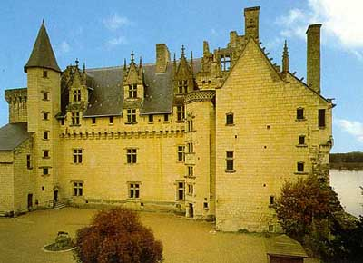

Персонаж, наиболее знаменитый во всей истории замка, - без сомнения Шарль де Камбес, которого обессмертил Александр Дюма-отец в своем романе "Графиня де Монсоро". Это литературное произведение, созданное три века спустя после описываемых событий, излагает историю Шарля, его жены Франсуазы (не Дианы, как в романе) и ее любовника - сеньора де Бюсси д'Амбуаз. Франсуаза де Меридор вышла замуж за Шарля де Камбес вторым браком; он был главным ловчим герцога Алансонского и в противоположность истории, рассказанной Дюма, не был ни старым, ни уродливым. 
В замке Кутансьер графиня де Монсоро познакомилась с Луи де Клермон д'Амбуаз, сеньором де Бюсси, фаворитом герцога Алансонского. Исторические хроники описывают его как красивого мужчину с тонкими чертами лица, с властным, словно завораживающим взглядом, как человека мужественного и образованного, поклонника Плутарха. Его независимый вид и манера поведения, подчас слишком бесцеремонная, стали причиной того, что Бюсси д'Амбуаз нажил себе много врагов. В 1579 году он решил покинуть двор и удалиться в свое поместье. К этому времени и относится начало его ухаживания за графиней де Монсоро, он даже хвастался успехом у нее в письме к своему другу при дворе: "Я подстрелил лань главного ловчего". Слухи дошли и до ушей Шарля де Камбес, который поспешил в свой замок и заставил свою супругу, которая клялась в абсолютной невинности, написать записку своему возлюбленному с просьбой о свидании в замке Кутансьер.
Смертельная ловушка была расставлена. Бюсси отправился на свидание в сопровождении только одного оруженосца и едва он переступил порог замка, тотчас же были заперты все двери, чтобы помешать его бегству. Сражаясь с десятком нападавших на него мужчин, он защищался как лев, и был смертельно ранен в тот момент, когда, казалось, ему удалось увернуться от убийц, выскочив в окно. Как это ни странно, известие о его смерти оставило Франсуазу де Меридор равнодушной, она нашла утешение в любви к своему супругу, которого она осчастливила многочисленным потомством.